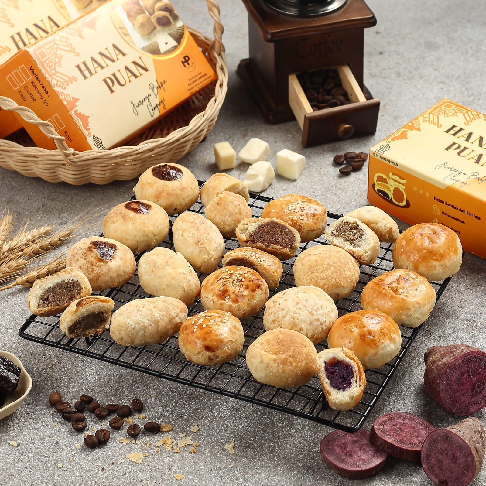

Sejarah Bakpia Lampung
Di balik setiap makanan yang biasa kita nikmati, terdapat sebuah kisah yang tak kalah menarik. Salah satunya adalah bakpia, camilan gurih yang tak asing lagi di lidah kita. Tapi tahukah kalian, bagaimana asal usul dari nama Bakpia Hana Puan itu sendiri? Setiap bisnis memiliki perjalanan uniknya tersendiri, tak terkecuali dari Pia Hana Puan. Awal mula terciptanya bakpia khas Lampung ini adalah dari sebuah hobi makan bakpia yang sering dibeli dari toko oleh-oleh.
Dari hobi mencicipi tersebut, terciptalah sebuah resep adonan yang terus dimodifikasi agar menciptakan inovasi dari sebuah produk. Kisah terciptanya Pia Hana Puan dimulai pada tahun 1998. Pada tahun tersebut, Bakpia khas lampung ini dikenal dengan nama Bakpia Muslimah, yang diperdagangkan secara mandiri dari warung ke warung dengan penjualan per pcs. Namun, seperti perjalanan hidup yang penuh liku, perjalanan produksi Pia Hana Puan sempat terhenti pada akhir 1999. Badai ekonomi dan perubahan zaman memaksa usaha ini untuk berhenti sementara, meninggalkan kisah yang belum selesai. Tapi, seperti halnya sebuah kebangkitan yang selalu ada di setiap perjalanan, pada tahun 2018, Pia Muslimah Kembali bangkit dengan nama Bakpia Lamphong. Tetapi perjalanan Bakpia Lamphong tak selalu mulus. Pada tahun 2020 kembali diuji dengan krisis baru yang memaksa usaha ini untuk berhenti Kembali.
Di tahun 2022, lagi-lagi Bakpia Lamphong Kembali bangkit menjadi Pia Siger Lampung. Ia Kembali hadir dengan semangat juang lebih besar. Yang pada awalnya hanya berjualan dari warung ke warung, pada saat ini memulai modifikasi usaha dengan menjual per box dengan system konsinyasi dan penjualan pribadi. Dikarenakan semakin banyaknya pembeli yang setia dan menyukai cita rasa dari Pia Siger Lampung. Pada tahun 2023 kita memperbesar usaha dengan mulai mengurus segala bentuk legalitas usaha dan Kembali mengubah nama dengan nama Bakpia Hana Puan.
Setiap nama selalu mengandung makna dan cerita dibaliknya. Seperti halnya sebuah nama “Hana Puan”. Sebuah nama yang tak hanya sekedar identitas, tetapi juga sebuah penghormatan terhadap keluarga dan nilai nilai yang dijunjung tinggi. Nama Hana Puan diambil dari sosok berharga dalam hidup ibu Arnida, hal yang menginspirasi terbentuknya nama indah tersebut yaitu diambil dari nama putri-putri tercinta yang menjadi sumber kebahagiaan dan kekuatan. Nama Hana Puan sendiri secara harfiah memiliki makna sebagai harapan, keindahan, kelembutan, dan mencerminkan kehormatan serta kedudukan yang tinggi.
Dari sebuah bahan baku premium yang diproduksi dengan kesungguhan hati, sehingga menciptakan sebuah bakpia dengan tekstur garing namun lembut di dalam serta memiliki citra rasa yang khas. Dengan varian Kacang Hijau, Kopi, Cokelat, Ubi Ungu, Keju dan Pisang. Saat ini, bakpia hana puan merupakan pelopor serta menjadi bakpia satu satunya yang menjadi khas dan oleh-oleh dari Lampung. Bakpia Hana Puan bukan hanya sekedar camilan. Ia adalah cerita sekaligus sebuah simbol dari semangat untuk terus berkembang, bangkit, bertahan, dan memberikan harapan yang tak pernah padam.
Bakpia Hana Puan
Juaranya Bakpia lampung

Keunikan Bakpia Lampung
- Memiliki tekstur yang berbeda dari bakpia lainnya.
- Varian rasa lokal seperti kopi dan pisang.
- Dikemas dalam desain modern khas Lampung.
- Pelopor pertama UMKM bakpia khas Lampung.
- Memiliki bentuk yang berbeda di setiap varian rasa bakpia
Produk Kami
Kami menyediakan berbagai varian bakpia dengan cita rasa khas Lampung:
- Bakpia Kacang Hijau
- Bakpia Kopi
- Bakpia Cokelat
- Bakpia Keju
- Bakpia Ubi Ungu
- Bakpia Pisang


Kontak Kami
Untuk informasi lebih lanjut, hubungi kami:
- Email: bakpiahanapuan@gmail.com
- Telepon: +62 858 9018 3698
- Instagram: @piahanapuan
- TikTok: @hanapuan3 dan @nengarnida